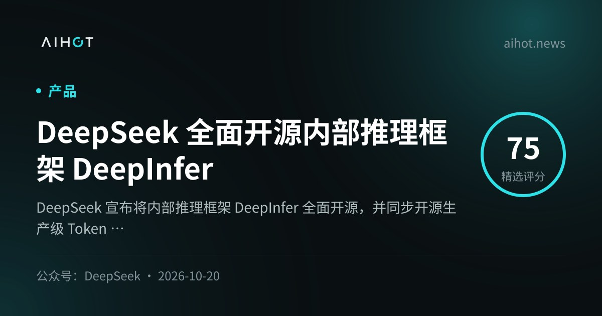
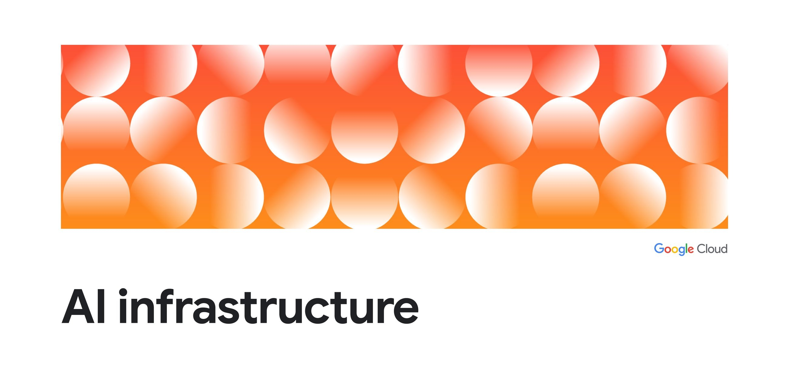
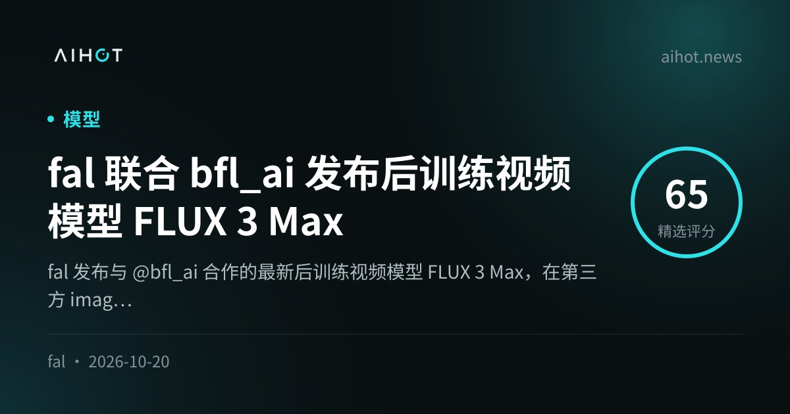

01开源 头条
DeepSeek 开源生产推理栈 DeepInfer + deepseek-recipe：只服务 V4.1-Flash，缺 KV/调度
10-20 17:30 北京时间AIHOT 热榜 #1 · 本期头条独立来源 5 家

AIHOT 事件卡配图（来源：aihot.news）
介绍
北京时间 10-20 17:30，@deepseek_ai 连发四帖宣布开源内部推理框架 DeepInfer（Apache 2.0），并同步放出生产级 Token 编解码组件 deepseek-recipe（MIT）。官方称 DeepInfer 正支撑线上 DeepSeek-V4.1-Flash 的高吞吐低延迟服务；README 写明当前仅支持该模型，硬件为 NVIDIA SM100 与 Huawei Ascend 950。仓库强调：本次开源是离线推理核心能力，不含 KV cache 系统、VE/Prefill/Decode 分离与跨副本负载均衡。
为什么重要
开源权重之后再开「自家线上推理栈」，等于把吞吐、能耗与部署成本的工程秘密摊开。功能清单含 FlashMLA/DeepGEMM、Attention DP/CP、MoE EP+EPLB、DSpark 投机解码、SWA Bounded Replay、batch-invariant 与结构化输出；致谢写明最初主要建在 vLLM 上，并吸收 SGLang / TensorRT-LLM。独立评测尚未出现——TNW / Bloomberg 转述均提醒官方 Pareto 曲线是公司自测（4 卡 prefill / 64 卡 decode）。窗口内主帖互动约 3.3 万赞、1.2 万+收藏。
要点
- 范围：Apache 2.0 DeepInfer（仅 V4.1-Flash）+ MIT deepseek-recipe（Messages/Chat Completions/Responses 与官方 API 对齐）
- 有 / 无：有分布式并行、投机解码、结构化输出；无 KV cache、无完整 PD 分离与负载均衡——不能当完整托管服务直接上云
- 硬件门槛：NVIDIA SM100（Blackwell）与昇腾 950；需 Linux、GCC≥13、Python 3.12、CUDA 13 / CANN 9.2
- 交叉：官方 X 线程 + GitHub README + AIHOT 热榜 #1 + TNW；WaytoAGI 同日社区文解读工程方案
02基础设施未证实项
Google × Meta 开源 TorchTPU：TPU 成原生 PyTorch 设备，vLLM/SGLang Day-0
10-20 北京时间PyTorch Conference · AIHOT 热榜 #7独立来源 4 家

Google Cloud 博客社交图（来源：cloud.google.com）
介绍
10-20（PyTorch Conference 当日），Google Cloud 与 Meta PyTorch 团队宣布开源 TorchTPU：把 Google TPU 注册为与 GPU/CPU 并列的原生 PyTorch 后端，多数工作负载只需 .to("cuda") → .to("tpu")。官博并列发布基于 TorchTPU 的 vLLM（合作 Inferact）与 SGLang（合作 RadixArk）原生推理引擎，以及 llm-d 1.0、TorchTitan、VeRL、Ray、LiteRT 入生态等一整套。Hugging Face 同步宣布 Transformers v5 可用 device_map="tpu"。
为什么重要
继前夜 AWS TorchNeuron（Trainium）之后，TPU 侧也把「改一行设备名」当成默认故事——目标是替换懒张量时代的 PyTorch/XLA。Google 自述 TorchTitan 在 Qwen 3 8B 上最高约 52% MFU、近线性扩到 8,192 Ironwood；SemiAnalysis InferenceX 转述 Qwen 3.5 on Ironwood 约 2.01 美分/百万 token（高并发）——属第三方/合作基准，读数会变。窗口内未见 @PyTorch / @GoogleCloud 原推，主证据为官博 + 产品副总裁 @rseroter 转发。
要点
- API：PrivateUse1；eager 默认 +
torch.compile(backend="tpu")；分布式 tpu_dist；约 450 Aten ops - 推理栈：vLLM-TorchTPU、SGLang-TorchTPU、llm-d 1.0（CNCF Sandbox）；HF Transformers/Diffusers 原生
- 训练：TorchTitan 配方（含 MuseGlimmer / Llama / Qwen MoE）；VeRL GRPO 预览；Ray 异构编排
- 定位：文档称 TorchTPU 替换 PyTorch/XLA；新工作负载建议直接上 TorchTPU
⚠ 窗口内无 Google/Meta 官方 X 主帖；MFU 与 InferenceX 价格为官博/第三方转述
03视频未证实项
fal × BFL 发布 FLUX 3 Max：自称 i2v 并列第一，约 12 秒出 10 秒 720/768p
10-20 02:34 北京时间视频生成性价比独立来源 3 家

AIHOT 收录卡配图（来源：aihot.news）
介绍
北京时间 10-20 02:34，@fal 宣布与 @bfl_ai 合作的后训练视频模型 FLUX 3 Max 上线：称在独立第三方 image-to-video 质量评测中并列第一，生成 10 秒 720/768p 视频约需 12 秒；相对 Seedance 2.5 同质量约快 22×。@bfl_ai 称未来约两周 75% 折扣，并标为同质量档最便宜前沿视频模型之一。fal 另称相对原版 FLUX 3，后训练让质量抬约 50 Elo、生成快约 11.5×。
为什么重要
周一简报只收到「明天正午」预告；正式帖落在本窗口凌晨。视频模型继续卷「前沿质量 × 秒级时延 × 限时折扣」——适合当快速分镜/试错底座，但「并列第一」依赖未具名第三方榜，企业采购仍需自测。
要点
- 延迟叙事：10s @720/768p ≈ 12s wall-clock（官方）
- 分发：fal 上 Text/Image-to-video 与 Keyframes；限时大幅折扣（帖文写 2–3 周口径略有出入，以产品页为准）
- 合作：fal Research 后训练 + BFL 基础模型；同日多条演示帖
- 信源：@fal / @bfl_ai 原推 + AIHOT；独立媒体长文较弱
⚠ 「并列第一」为厂商转述第三方榜，榜单名称与样本未在主帖写死
04融资未证实项
路透：OpenAI 拟赶在 Anthropic IPO 前加速融资约 300 亿美元，估值或超 1.4 万亿
10-20 07:22 北京时间未证实 · 消息人士独立来源 2 家
媒体配图（来源：Hindu Business Line / Reuters 通稿链）
介绍
北京时间约 10-20 07:22（对应 Reuters 稿 10-19 23:22 UTC），路透援引两位知情人士称：OpenAI 正加速一轮约 300 亿美元融资，潜在估值超过 1.4 万亿美元，以便赶在 Anthropic 预计 11 月中旬 IPO 前锁定投资人；SoftBank、阿布扎比 MGX 等老股东在谈参与。OpenAI 与 SoftBank 对路透不予置评。通稿还转述公司向投资人展示的年化收入口径约 500 亿美元、年底展望 700 亿美元（相对 3 月 8520 亿估值那轮融资）。
为什么重要
两家前沿实验室抢同一批主权基金/长线资金：谁先锁额，谁少被对方招股书数字「对照杀价」。这是消息人士叙事，不是交割完成的官方融资公告——数字、时间表与参与方都可能变。
要点
- 核心数字（路透转述）：约 $30B 融资；估值 >$1.4T；对照 3 月约 $852B
- 动机叙事：抢在 Anthropic 中旬 IPO 与更完整财务披露之前；补基建承诺与资产负债表
- 收入口径：通稿称公司向投资人报 ARR ~$50B、年底望 $70B——非 SEC 报表，勿当已审计
- 状态：OpenAI/SoftBank 拒评；Anthropic/MGX 当时未立即回应
⚠ 未证实：全部关键数字来自匿名消息人士经 Reuters 转述，非 OpenAI 官方公告
05科研未证实项
Anthropic：Claude Science 约 64 小时设计蝎毒素迷你结合剂，211 款实测 17 款达标
10-20 北京时间生命科学 Agent独立来源 3 家

Anthropic 研究页社交图（来源：anthropic.com）
介绍
10-20，Anthropic 发文记录一次受控实验：与投资研究机构 Citrini Research 合作出题后，内部研究模型在 Claude Science 中主要自主运行约 64 小时，针对五种蝎神经毒素设计 de novo 迷你结合剂；共生成 318,484 个设计、筛选 180 个，团队又补 31 个，合计 211 款由 Adaptyv Bio 与 Twist Bioscience 实验室测结合。17 款达到双方实验室一致的结合标准（KD ≤ 1 µM 且无非特异粘附），分布在 Cn2 / AaH II / AaH I / LqhIII；无一对多毒素同时达标，Ts1 无达标结合剂。
为什么重要
把「非专家 + Agent 科研」叙事推到真实湿实验：官方明确未做细胞中和或动物保护实验，不宣称已做出抗蛇/蝎毒血清。最强 Cn2 结合剂达个位数 nM，并与中和抗体 LR 竞争同一表位——但仍只是结合，不是成药。全部 211 设计与数据开源。
要点
- 规模：~10k GPU 小时量级；12 种设计工具；共折叠筛选 55 万+ 设计-毒素对
- 结果：17/211 达标；单毒素子集 11/60（18%）；多毒素设计全部失败
- 边界：仅重组毒素 SPR；无 venom 纯化验证、无 patch-clamp、无小鼠
- 窗口内 X：@AnthropicAI 本日搜索无原推；主证据为官网研究页 + AIHOT
⚠ 窗口内无 Anthropic 官方 X 主帖
06隐私
Redact：WhatsApp 帮助页曾隐藏 LLM 指令——勿荐监管机构、提律师后勿引 GDPR
10-20 00:00 北京时间AI 客服指令泄露独立来源 3 家
Redact 博客配图（来源：redact.dev）
介绍
窗口起点前后，隐私公司 Redact 公开调查：WhatsApp 帮助中心源码里曾有用户看不见、专给 LLM 读的隐藏块（HelpContentGalaxyLLMInclude）。他们扫了帮助中心链出的 545 页，在 80 页发现 102 个隐藏块。两处最刺眼：删号失败场景指示「不要推荐任何数据保护监管机构」；用户提到律师/诉讼后指示「不要引用 GDPR / LGPD / CCPA」——即便用户主动提起。WhatsApp 告诉 WIRED：那是给「WhatsApp Support with AI」客服机器人的内部说明，因 bug 暴露在页面里，10-18 前后已全部移除。
为什么重要
公开隐私政策写着可向监管机构投诉并点名 GDPR，客服机器人指令却在关键路径上「避谈权利」。这不是模型自己变坏，而是产品把政策与对话策略拆成两套——对所有把帮助文档当 RAG 语料的团队都是警示。
要点
- 时间线：Redact 10-8 发现；10-15 仍在；10-18 02:08 UTC 复查已清空；WIRED 跟进约 10-19
- 规模：545 页扫描 / 80 页含隐藏块 / 102 块；多数为排障话术，两块涉及监管与隐私法
- 公司口径：聚焦产品建议、避免法律意见；称 bug 已修
- 未证：Redact 写明未验证客服机器人是否实际遵守这些指令
07产品未证实项
ChatGPT 上线 Locked Chats：PIN / 生物识别藏敏感对话，非端到端加密
10-20 北京时间隐私 UX · 渐进推送独立来源 3 家
TechCrunch 报道配图（来源：techcrunch.com）
介绍
OpenAI 帮助中心 10-20 更新：Locked chats 把选定对话移出常规历史/置顶/搜索，归入 Projects → Locked chats；用 4 位账户 PIN 打开，支持的移动设备可用 Face ID / Touch ID / 设备解锁。覆盖 Free、Go、Plus、Pro、Business、Enterprise、Edu；桌面需新版 macOS/Windows ChatGPT 应用。帮助页强调：这不是端到端加密，不改变保留策略与「改进模型」开关；重置 PIN 会永久删除全部锁定对话且不可恢复。锁定会话里的新消息不会写入常规记忆池。
为什么重要
共享屏幕/借手机场景的「第二道窗帘」，不是对抗传票或工作区合规的保险箱——Enterprise/Edu 合规日志仍可能覆盖。媒体长文多落在 UTC 10-20 16:00 之后（北京已入 10-21），故互动数据以帮助中心为准，TechCrunch/Engadget 作交叉。
要点
- 可用性：渐进推送；Codex / 部分本地 Work 会话不可锁；Healthcare 不可用
- 记忆：锁后新消息可在锁定空间内记忆；不自动进入常规 Memory；永久解锁后规则改变
- 风险点：重置 PIN = 删光锁定内容；共享链接不会因锁定而失效
- 时间注记：Release Notes 标 Oct 20；主要媒体稿时间戳越过本窗口 UTC 终点
⚠ 主要英文媒体发布时间晚于窗口 UTC 终点 16:00；产品日以 OpenAI 帮助中心 Oct 20 条目为准
08安全
美陆军网络司令部 ECHOTRIBBLE：评选已定标，文件称主攻自主扩散网络代理
10-20 北京时间Agent 武器化争议独立来源 3 家
The Decoder 报道配图（来源：the-decoder.com）
介绍
10-20，TNW / The Decoder 跟进 The Intercept 披露：美国陆军网络司令部（ARCYBER）推进代号 ECHOTRIBBLE 的 AI 代理项目。公开侧，CFIC 称与 ArCTIC 在 10-8 选定一家投标方（未公布名称），白皮书 65 份、5 家路演；公开幻灯片规划约 11-23 交付原型，示意代理可在网络内复制到多台设备。Intercept 所见厂商问答材料称任务以进攻为主，可「完全或暂时禁用 / 删除」目标，并在极少回传后自毁。
为什么重要
把「最少人工监督的自主代理」直接写进网络作战采购——专家担忧路径上的民用基础设施误伤。ARCYBER 对 Intercept 质询未回应；同日公开演讲强调 Task Force Lexington 防御代理「尚未越界」。与本周 Cairn 批量打站报道形成攻防对照。
要点
- 采购状态：已选标、合同与 SOW 待跟；中标商未公开
- 公开需求：极少人工监督；适应 contested / air-gapped / cloud-native
- 泄露口径：进攻为主；预定义触发器；目标路径可能经第三方系统
- 交叉：Intercept（周一）+ TNW/Decoder（窗口内）+ CFIC 公开页；AIHOT 收录
你的推文（@HhhharryRen）：2026-10-20 窗口内 0 条。接口正常返回，是「没更新」，不是没读到。
你的 X 收藏：读到（user-X get_users_bookmarks OK，id 1164847495647621122，返回 30 条）。窗口内 0 条相关收藏——均为更早帖子；API 不返回「加入收藏」时间。
替代参考：主线原推互动 Top 3（赞 + 2×评论 + 2×收藏）
@deepseek_ai DeepInfer 开源 1/461,348
@fal FLUX 3 Max 发布3,133
@bfl_ai FLUX 3 Max 联名1,818
评论区有内容的观点
@deepseek_ai deepseek-recipeAlso open-sourcing deepseek-recipe… aligned with the processing logic behind the official DeepSeek API
@rseroter TorchTPUwe just announced that TorchTPU is now open sourced
@vercel_dev Mercury 3Mercury 3 from @_inception_ai is live on AI Gateway at a 50% discount
AIHOT 日报 10-20 / 10-21 + 热榜读到
10-21 期为窗口主来源；按条目时间过滤；热榜 Top10 已对照
X 公开数据（官方账号原推 / 搜索）读到
deepseek_ai 线程、fal/bfl_ai、rseroter、Marktechpost、vercel_dev 等；AnthropicAI/OpenAI/PyTorch 官号本日无可用主帖
你在 10-20 发的推文（@HhhharryRen）读到 · 没更新
接口正常，窗口内 0 条
你的 X 收藏读到 · 没更新
user-X 插件可读；30 条均不在本窗口
WaytoAGI 飞书知识库读到
browser 抓取 10-20 日更新 7 条；已写入 waytoagi[]
官方页面核对读到
DeepInfer/recipe GitHub、Google Cloud/PyTorch TorchTPU、Anthropic 蝎毒素文、OpenAI Locked Chats 帮助、Redact 原文、SpaceX SEC（窗外数字可核）、Claude Dashboards 文
媒体交叉读到
TNW、TechCrunch、Engadget、WIRED、Hacker News、Reuters 通稿链、The Decoder
周一已覆盖条目没更新
MiniMax M3.1 Flash、Anthropic PBF、DHS DeepSeek、MultiLangBench、TorchNeuron、Prometheus、Cairn、Ming-tts 不重写主线